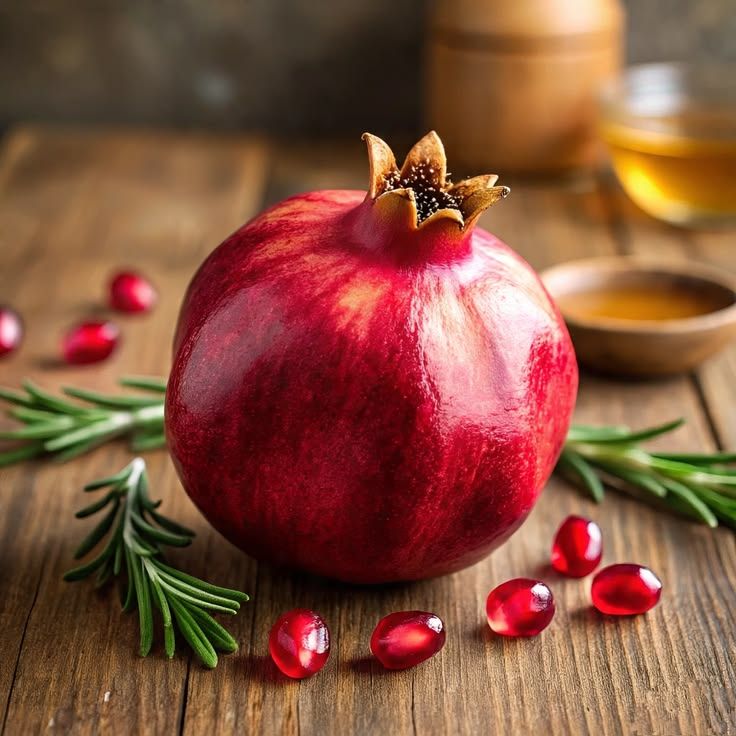
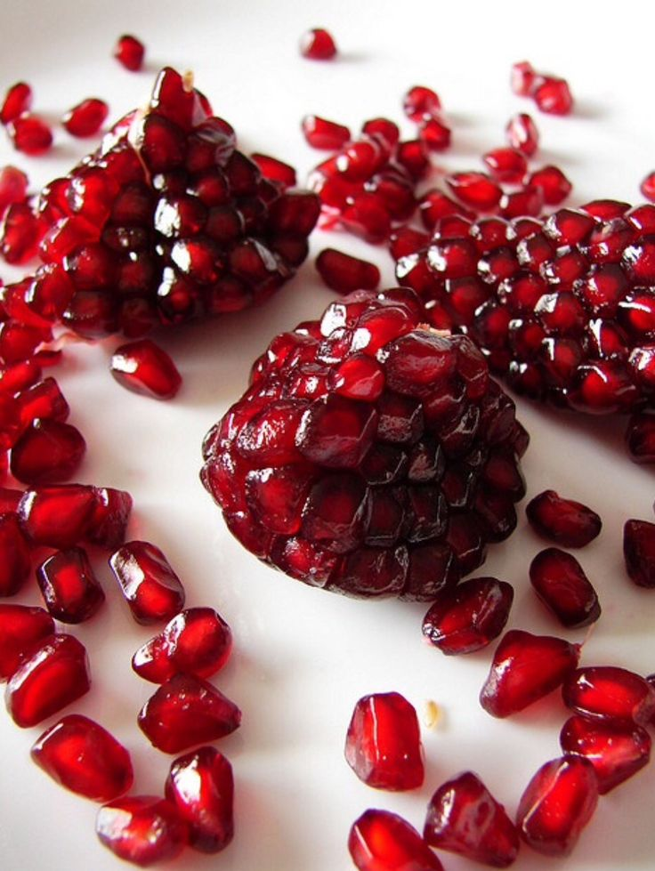
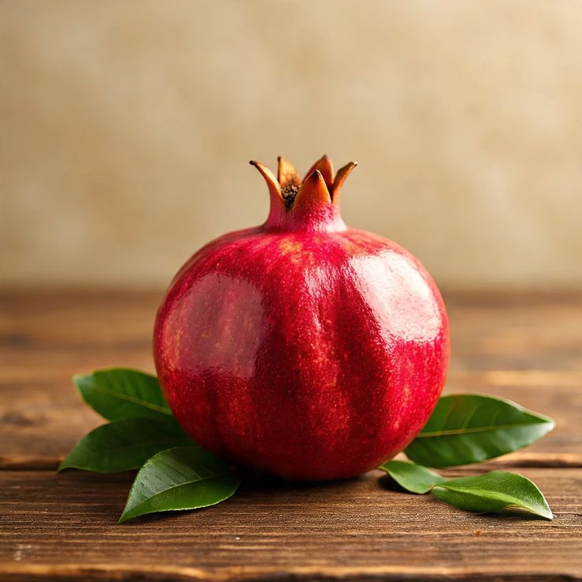

Disfruta del sabor dulce y refrescante de nuestras granadas recién cosechadas, cultivadas de forma natural y sostenible.

Cosecha 2024La Granada Entera Premium es una fruta seleccionada de alta calidad, caracterizada por su excelente tamaño, color uniforme y cáscara en buen estado. Es jugosa, dulce y fresca, ideal para consumo directo, jugos o ensaladas. Representa la mejor opción para quienes buscan sabor, frescura y buena presentación.

PopularGranos de granada desgranados y listos para agregar a tus ensaladas, postres, smoothies o consumir solos.

NuevoLa granada de segunda calidad es una fruta fresca con algunas imperfecciones en su cáscara, pero mantiene su buen sabor y jugosidad. Ideal para consumo diario, especialmente en jugos y postres, ya que conserva sus propiedades nutritivas.